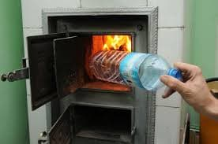
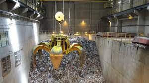
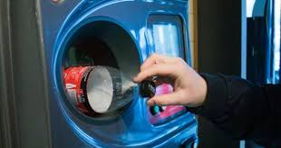

Spis treści:
Dlaczego nie wolno spalać śmieci?
Może wydawać się, że spalanie śmieci w piecu czy ognisku jest niegroźne, a wręcz korzystne, ponieważ pozbywamy się zbędnych śmieci oraz wytwarzamy ciepło. Jest to błędne załorzenie, ponieważ spalanie plastiku, a w szczegulności butelek( wykonanych z materiału PET ) wydziela wiele toksycznych i rakotwórczych gazów. Według znaleźonych przezemnie informacji w czasie spalania plastiku uwalniane są "Furany" i "Dioksyny" wykazują one właściwości kancerogenne( czyli powodują lub zwiększają ryzyko wystąpienia nowotworu ).

Dlaczego, w takim razie spalarnie przemysłowe mogą spalać plastik a gospodarstwa domowe nie?
Można pomyśleć, że jest to spisek przeciwko szarym obywatelom lecz przyczyna jest inna. W spalarniach przemysłowych odpady utylizowane są w piecach których temperatury wachają się między ok. 850 st. C. do nawet 1000 st. C. których zwykły piec nie jest w stanie osiągnąć. Za spalanie śmieci w piecach domowych może grozić od 500zł( mandatu ) do 5000zł (jeżeli sprawa wpłynie do sądu ).
 Co w takim razie powinienem zrobić z odpadami?
Według danych ZCG( Związek Celowy Gmin ), nie ma obowiązku segregowania śmieci na terenie województwa lubuskiego lecz osoby nie segregujące obciążone będą dodatkowymi opłatami. Jeżeli nie segregujemy będzie posiadać jeden pojemnik na odpady mieszane do, którego trafiać będzie wszystko z pojedyńczymi wyjątkami, w przypadku segregowania śmieci posiadać będziemy pojemniki na plastik, papier, szkło, odpady biodegradowalne (nie przetworzone resztki jedzenia ) oraz odpady mieszane do których będą trafiać materiały których nie da się konkretnie przydzielić do konkretnego pojemnika.

Alternatywy dla wyrzucania śmieci.
Nie zawsze trzeba wyrzucać śmieci, można wykorzystać odpady pownownie, proces taki nazywany jest recyklingiem. Przykładem jak ponownie wykorzystać śmieci mogą być doniczki wykonane z zurzytych platikowych butelek. Innym przykładem recyklinku jest oddawanie makulatury, czy plastiku do specjalnych skupów. W duży miastach funkcjonują już automaty które wymieniają plastikowe butelki za pieniądze.
{kind=link}
{kind=link}
{kind=link}